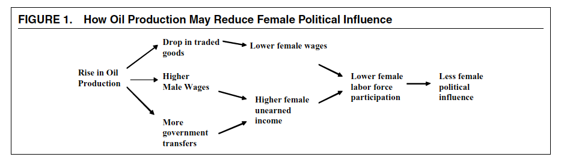
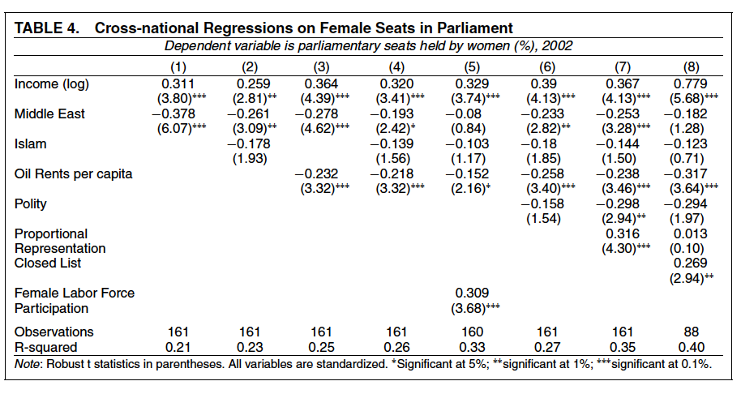

收录于合集

作品简介
【作者】 迈克尔·罗斯（Michael L. Ross），加州大学洛杉矶分校（UCLA）政治学教授，同时隶属于该校环境和可持续发展研究所。其主要研究方向为资源丰富国家的政治和经济问题，以及能源政治、内战、民主和性别权利等议题。
【编译】 许文婷（国政学人编译员，芝加哥大学硕士生）
【校对】 王泽尘
【审核】 李玉婷
【排版】 黄婷婷
【美编 】聂涵琳
【来源】 Ross, Michael L. “Oil, Islam, and women.” American political science review (2008): 107-123.
期刊简介
美国政治科学期刊（American Journal of Political Science, AJPS）是创刊于1957年的政治科学领域综合类期刊，也是中西部政治协 会(The Midwest Political Science Association,MPSA）的官方期刊。根据Journal Citation Reports数据，其2019年的影响因子为4.271，在176种政治科学期刊中排名第二。
石油、伊斯兰与女性
Oil, Islam, and Women
Michael L. Ross
摘要
中东地区在实现女性性别平等方面取得的进展比其他任何地区都少。许多观察家声称，这是由于该地区的伊斯兰教传统所致。而本文认为这是由于石油问题而不是伊斯兰教。石油生产也解释了为什么女性在许多其他国家处于落后地位。石油生产减少了劳动力中的妇女人数，从而减弱了妇女的政治影响力，这导致产油国有着异乎寻常的父权制规范、法律和政治制度。本文通过有关石油生产、女性工作模式和女性政治代表的全球数据，以及将石油资源丰富的阿尔及利亚与石油资源匮乏的摩洛哥和突尼斯进行比较来支持这一论点。这一论点对中东、伊斯兰文化和“资源诅咒” （resource curse）的研究具有启示意义。
引言
中东地区的女性较其他地区更少外出工作，也更少在政府任职。大多数观察者将这一反常问题归咎于这一地区的伊斯兰教传统，有些人甚至声称穆斯林女性的不公待遇是引起伊斯兰与西方之间“文明的冲突”的一部分原因。但本文认为中东地区的女性在劳动力和政府部门中未被充分代表是由于石油问题而非伊斯兰教。石油和矿产生产也可以解释在中东地区之外的其他许多国家，例如阿塞拜疆、博茨瓦纳、智利、尼日利亚和俄罗斯等地女性异常低的地位。
石油生产通过减少女性在劳动力中的存在来影响两性关系。女性退出非农业劳动力将提高生育率、减少女性所受教育并降低其在家庭中的地位；而在政治生活领域，当女性更少地走出家门工作，她们也将更少参与交换信息、克服集体行动问题、进行政治动员、为扩展权利游说以及在政府中任职。这造成了产油国异常强的父权文化和政治制度。
这一观点挑战了经济发展中“发展促进性别平等”这一普遍信念。本文认为不同种类的经济发展将对两性关系产生不同的影响，这取决于这种经济发展是否鼓励女性进入劳动力市场。该观点也为理解“资源诅咒”提供了新的信息：石油和矿业生产不仅会影响一个国家的政府和经济，还会影响其核心社会结构。此外，本文也有着重要的政策和现实意义。
文章导读
01
女性加入劳动力的结果
社会理论家提出女性通过走出家门工作可以实现社会与政治解放。首先，女性劳动力能够帮助提高女性入学率和识字率。当家庭意识到女性可以带来收入时，就会愿意对其进行更多的健康和教育投资。其次，女性加入劳动力队伍还更广泛地影响了两性关系，尤其是女性在工厂中工作将使她们能互相联系，从而分享信息，并减少集体行动的障碍。最后，女性加入劳动力将提高女性的政治影响力，其原因有多方面，例如职业女性更倾向于参与推动某种政治利益的对话，会加入便于集体行动的非正式网络，并帮助她们提高公民技能。由于更易受到性别歧视，她们的政治动机反而将被激发。在发展中国家进行的女性政治参与的研究与这些发现相一致。
研究表明，加入劳动力队伍可以通过至少三个渠道增强女性的政治影响力：在个人层面影响女性的政治观点和身份；在社会层面，通过增加劳动力中妇女的密度，从而增加她们形成显著政治网络的可能性；在经济层面提高她们的经济重要性并因此迫使政府考虑到她们的利益。
02
女性参与劳动力的原因
大多数女性面临着进入劳动力市场的特殊阻碍。男女之间的职业隔离（occupational segregation）倾向于减少向女性开放的工作数量和其工资。理论上，女性可以通过说服政府采取反歧视政策来进入劳动力市场，但实际上，当女性被排除在劳动力市场之外，她们通常只拥有微弱的政治影响力，这使得政府无意于为她们行动。
在职业性别隔离和弱政治影响力的情况下，女性如何大量加入劳动力？自工业革命早期，这一问题的答案通常都来源于低工资的出口导向型工业。这些行业不需要有身体强壮的工人，也不需要很强的职业技能，同时这些行业的代表，如纺织业和服装制造等，被视为传统的女性工作，使得女性可能大量成为这些行业的劳动力。同时，主营出口业务的工厂也更倾向于雇佣女性。研究显示，即使在同一行业，出口导向型的工厂相比于主营国内市场的工厂更倾向于以更高的工资雇佣女性。这可能是由于出口导向型的工厂面向国际市场，更容易扩张，因此可以在不取代男性员工的情况下雇佣更多女性。同时，出口型工厂更有可能被外资企业持有或管理，它们出于法律或文化的原因会更少对女性进行职业性别歧视。此外，出口导向型工厂在全球市场上竞争，成本最低化的要求使得它们会寻求最廉价的劳动力。女性工资相较于男性一般较低，这也使得出口型工厂更倾向于雇佣女性。
03
女性参与劳动力的影响： 以韩国为例
本段落通过介绍韩国的案例来说明女性参与劳动力带来的社会和政治影响。20世纪60年代韩国的工业化使得女性开始进入出口工厂任职。比男性一半还低的工资使得她们成为雇主青睐的员工，这也助推了韩国的经济腾飞。同时，自70年代起，在出口行业工作的女性们也开始为劳动权益和性别平等而更多地动员起来。1987年，韩国的女性活动家们借助韩国民主化的进程成立了韩国妇女协会联合会（Korean Women’s Association United， KWAU），而在90年代中期，女性组织开始推动并谋求女性在各级政府中更多的代表权，并取得了女性议员和法官数量上升等卓有成效的成果。女性运动的游说力量和女性在政府中数量的增加也使得韩国的社会和政治生态发生了变化，政府相继出台了《男女平等雇佣法》、《母子福祉法》、《韩国女性发展基本法》等保障女性权益的法案。以出口为导向的制造业通过吸引妇女加入劳动力队伍，帮助韩国妇女在政府中立足，并且为改革父权制度打开了大门。
04
石油生产如何影响女性参与劳动力
新发现石油的国家容易产生一种被称为“荷兰病”（Dutch Disease）的经济现象，其特征包括实际汇率的上升和经济从“贸易部门”（农业与制造业）向“非贸易部门”（建筑业与服务业）的转换。如果我们将“荷兰病”的模型进行拓展，就可以看出在大多数低收入国家，石油生产的繁荣如何将女性挤出劳动力。
在传统的“荷兰病”模型中，石油生产的发展将通过两个机制排挤其他贸易货物的生产。首先，外国货币的涌入将抬高实际汇率，这使得购买国外进口产品变得比从本国生产者手中购买更为便宜。其次，新生财富将增加对非贸易商品的需求，这将把劳动力从贸易部门引向非贸易部门，进而形成双方物价和利润的差异，导致贸易部门的衰落和非贸易部门的扩张。而在传统的女性劳动力供给模型中，有两个关键因素影响女性中劳动力市场中的数量：其一是女性的普遍工资，当其上涨时，女性更倾向于进入市场，用工作代替休闲。其二是“女性非劳动收入”（female unearned income），指女性家庭获得的收入，但她并未直接挣得此份收入。当家庭收入提高，女性不太倾向于进入劳动力市场以获得另一份收入。家庭收入提高时，其“保留工资”（女性认为值得进入劳动力市场的工资）也将提高，此时只有一份薪酬可观的工作才将吸引她进入劳动力市场；而当家庭收入降低时，女性“保留工资”也将降低，即使女性普遍工资较低，她也更倾向于加入劳动力。
传统的“荷兰病”模型对女性劳动力参与的影响是模糊的，它将提升普遍工资水平，这使得女性更有动力进入劳动力市场。但同时，普遍工资的提高也使得家庭收入水平提高，这又使得女性更不愿进入劳动力市场。而当我们扩展“荷兰病”模型，考虑职业性别隔离这一因素，就会发现在许多发展中国家，女性大多数在贸易部门工作，这是由于非贸易部门的许多工种需要繁重体力劳动或是与家族外的男人接触。当我们假定在劳动力市场中存在性别隔离时，石油产业的兴旺会造成男性和女性工资的会出现差异。在我们的模型中，我们假定男性只在非贸易行业工作，女性只在贸易行业工作。由于这一假设，石油带来的非贸易行业的扩张将增加对男性劳动力的需求，并提高其工资，而相伴随的贸易行业的萎缩则会减少对女性劳动力的需求并降低其工资。同时，石油繁荣也将通过男性工资的提升和政府转移支付的增加提高女性非劳动收入，从而提升她们的保留工资，使其更不愿意进入劳动力市场。
接下来本文放宽部分模型关键假定，进一步探究石油繁荣下女性劳动力变化情况。模型假设一国具有开放型经济，但有时产油国的政府会运用关税和补贴等方式保护其贸易部门。本文认为这并不会影响前文得出的结论。首先，产油国政府倾向于保护国内重工业而非轻工业。其次，即使政府保护轻工业，一旦国内贸易部门获得政府保护，它也就失去了与进口产品竞争的动力，因此也没有动机去寻找廉价劳动力，进而雇佣女性工人。本文模型还假定一国工作年龄男性和女性人数是固定的，但许多小的产油国会从国外引进男性和女性劳工。如果政府可以从国外引进男性劳工，那么国内男性工人的工资将不会提高，但政府仍将获得大量石油收入，增加转移支付，从容提高女性非劳动收入，同样会导致女性更不愿进入劳动力市场。如果政府可以从国外引进女性劳工，那么女性普遍工资将下降，降至低于本国女性保留工资的水平，这同样将阻碍本国女性加入劳动力。而且男性与女性外来劳工的加入将使得本国劳动力规模膨胀，即使本国男性与女性劳工的数量不发生改变，本国女性劳动力的占比也将下降。
如果我们放宽关于性别职业隔离的假设，允许男性进入贸易部门工作，得到的结论仍是相同的。贸易部门萎缩后，男性和女性劳工都会失业，但男性劳工可以进入非贸易部门工作，女性则不能。因此，女性工资依旧会下降，女性非劳动收入仍会增加，女性也会更多地退出劳动力市场。而如果女性也能够进入非贸易部门工作，结论则将发生变化，此时石油产业发展对女性劳动力比例带来的影响将变得模糊，取决于女性工资上升程度和女性非劳动收入上升程度间的差异。当女性工资足够高，超过了女性保留工资水平时，女性劳动力数量也会出现净增。这表明在女性能够自由进入非贸易行业的国家，石油并不一定会伤害女性的地位。
综上所述，本文模型的第一个主要假设是：
H1:石油产值的增加将减少女性参与劳动力的人数。
前文提及，女性的政治影响一定程度上是女性劳动力参与的函数：当女性公民参与劳动力的比重增加时，女性的政治影响力也将增加。基于此，我们可以进一步推断出第二个主要假设：
H2:石油产值的增加将降低女性的政治影响力。
下图展示了石油生产如何对女性产生政治影响：

图 1 石油生产可能如何降低女性政治影响力
05
数据与方法
为了检验上述两个假设，本文使用1960-2002年间所有国家的石油生产与就业率数据，以及2002年的女性政治代表数据，以检验三个核心变量：石油、女性工作模式和女性政治代表间是否具体统计学相关。本文使用了两种估计方法，其一是一个包括了国家固定效应的一阶差分模型，使用了1960至2002年间所有国家的混合时间序列截面数据；其二是一个组间估计量的跨国模型，包括最近十年里所有国家的数据。固定效应一阶差分模型分析一个国家内部随时间发生的变化，跨国模型则分析国家间的变化。
国家固定效应一阶差分模型结构如下：
使用组间估计量的跨国模型结构如下：
其中i代表国家，t代表年份，x代表一系列解释变量。
本模型的自变量为人均石油收入（Oil Rents Per Capita），指一个国家年度的石油和天然气总收入除以其年中总人口。本模型有两个因变量，其一是女性劳动力参与度（Female Labor Force Participation），基于国际劳工组织收集，世界银行发布的全国调查和普查数据。一阶差分模型的运用以及从数据集中去除农业部门劳动力和外来劳工，解决了这一数据面临的劳动力定义与统计方式不一问题。其二是女性政治影响，本文使用两个变量进行度量，分别是女性席位（Female Seats，衡量女性所获席位在该国议会中的比重）和女性部长（Female Ministers，衡量女性占该国部长级官员的比重）。本模型还包括一些控制变量，例如收入（Income）、是否为中东国家（Middle East）、本国人口中穆斯林的比例（Islam）、是否为共产主义国家（Communist）、工龄人口占比（Working Age）以及关于政治制度的变量：是否为比例代表制（Proportional Representation）、是否采用封闭式名单（Closed List）和政体（Polity）。
本文使用三种方法检验模型稳健性：首先，为了确定估计值是否对有影响力的观察敏感，作者从数据集中删除了两个影响最大的国家后重新进行了估计。其次，为了检验有关女性劳动力参与的跨国回归结果是否限定于所涵盖的时期（1993年至2002年），作者对1960年至1969年，1970年至1979年以及1980年至1989年的几十年中使用了相同的模型。最后，为了检验跨国模型是否因排除重要的区域效应而产生偏差，作者向模型中添加了一组区域虚拟变量。
06
结果
表 1 混合时间序列跨国回归（含一阶差分与固定效应）
表 2 对于女性劳动力的跨国回归
1. 女性劳动力参与
石油收入对女性劳动力参与有很大的负面影响。在一阶差分回归估计（表1）中，给定某年石油收入对增加与下一年女性劳动力参与的减少是始终相关的。在跨国估计（表2）中，石油收入与女性劳动力参与也是负相关的。收入，中东，工作年龄和共产主义等变量在预期的方向上也与女性劳动力参与率相关。伊斯兰这一变量不显著（第2、4列）。两个模型的估计结果均通过稳健型检验，并与假设H1是一致的。
2. 女性代表性
表3展示了在不同类型的国家中女性获得议会席位的比例。该表显示，在七种国家中的五种，妇女在石油资源稀缺的国家中具有更好的政治代表性：高收入和低收入，中东，伊斯兰和全体国家。在剩下两个类别（非中东和非伊斯兰）中，石油丰富国家的女性代表性强于石油贫乏的国家，但这仅在我们将发达国家和发展中国家都包括在样本中时才成立。一旦将样本限制在发展中国家，我们就会再次看到，石油丰富的国家的女性代表性要比石油贫乏的国家低，即使在非中东和非穆斯林国家中也是如此。
表 3 2002年由女性获得的议会席位数量
在跨国回归中，石油收入与女性政治代表性的所有三种衡量指标均呈负相关。表4的第一栏显示，收入与较高水平的女性席位相关，而中东与较低水平相关。在第2栏中，伊斯兰教也与女性席位的减少有关，尽管它仅在0 .10时才有意义。第3栏显示，石油收入与女性席位的较低水平密切相关，并且将其包含在内会使中东变量系数下降三分之一。这也会导致伊斯兰变量在0.10的水平上失去统计意义（第4列）。石油收入和女性席位之间的关联性很强：不受两个最有影响力国家的排除以及区域虚拟变量的影响。如果女性席位是在1995年（可用的最早年份）而不是2002年进行测量的，结果也不变。第6、7和8列显示，“石油收入”这一变量对于包含可能影响女性政治代表的政治机构控制变量（政体，比例代表制和封闭名单）而言是强有力的。衡量地区规模的变量在统计上不显著，可能会影响女性政治代表的衡量移民数量的变量也并不显著。
表 4 对于女性议会席位的跨国回归

石油收入与女性部长有相似的负相关性（表5）。伊斯兰教对女性部长的影响甚至小于对女性席位的影响（第2栏和第4栏）。这些结果与假设H2一致，表明石油生产将减少女性的政治影响力。也有证据表明，女性劳动力参与有助于解释为什么石油收入与女性代表减少有关。女性劳动力参与与女性席位紧密相关，而女性参与的加入会导致石油系数大幅下降（表3，第5列）。女性的劳动力参与与女性部长数没有显著联系，尽管将其包括在内会使石油租金变量不显著（表5，第5列）。这些结果与石油生产通过减少在外工作的妇女人数来减少女性的政治影响的观点相一致。
表 5 对于2002年女性部长职位的跨国回归
07
石油与中东
上述回归结果显示，伊斯兰教对模型中的任何因变量没有显著统计意义。这意味着中东地区女性地位的某些衡量标准可以部分地由该地区的石油财富而非其伊斯兰文化或传统来解释。然而这并非在衡量女性地位的所有维度上都是如此：女性教育程度（包括成人识字率，小学入学率和男女入学率之间的比率）与伊斯兰教呈负相关，而且似乎不受石油收入的影响。前文所述的统计结果是否将石油与阿拉伯伊斯兰文化的效应混淆了呢？下文将在中东伊斯兰国家中讨论石油与女性地位间的关系。
图3至图6是散点图，显示了各国人均石油收入与女性地位的四种衡量标准（女性劳动力参与率，女性选举年限，女性在议会中所占的席位比例以及按比例衡量的性别权利）之间的关系。总的来说，石油资源最丰富的国家（沙特阿拉伯，卡塔尔，阿拉伯联合酋长国和阿曼）的非农业劳动力中妇女最少，不愿授予女性选举权，议会中妇女最少， 并且在性别权利指数上得分最低。几乎没有石油的国家（摩洛哥，突尼斯，黎巴嫩，叙利亚和吉布提）是最先授予女性选举权的国家，并且往往在工作场所和议会中拥有更多的妇女，性别权利得分更高。散点图中的离群值可以由劳动力流出解释，也门、埃及、约旦等国石油匮乏，但它们的女性占劳动力的比重依然很低，这主要是由于这些国家大量的劳动力流向了海湾富裕国家。
图3 中东地区的石油收入与女性劳动力参与
图4 中东地区的石油收入与女性普选权

图5 中东地区的石油收入与女性议会席位
图6 中东地区的石油收入与性别权利指数
07
案例研究：阿尔及利亚、摩洛哥和突尼斯
回归分析的结果指出石油生产和女性劳动力、女性代表性间存在统计学联系，但它无法解释原因。为了进行机制分析，本文选取了阿尔及利亚、摩洛哥和突尼斯进行案例分析。这三个国家都是法国殖民地，并都在20世纪50年代末60年代初获得独立。独立后这些国家都很快授予了女性普选权，主要人口均为穆斯林。这三个国家的区别则主要在于石油财富的多寡。阿尔及利亚自20世纪60年代开始就是主要的石油生产国，摩洛哥和突尼斯石油产量则相对较少。这三个国家的女性政治代表程度也存在差异，在富裕的阿尔及利亚，女性在议会中占6.2%的席位，而在乏油的摩洛哥和突尼斯，这一数字分别为10.8%和22.8%。它们之间石油财富的差异能够解释它们在女性劳动力数量方面的差异，进而解释它们在女性代表权方面的差异。
文章接下来运用前述“荷兰病”模型分析了这三个国家独立以来的工业发展历程，阿尔及利亚因为发现了储量丰富的石油，形成了庞大的石油部门，而摩洛哥和突尼斯则发展了大规模的纺织工业。其结果就是阿尔及利亚的女性并未大规模进入劳动力市场，而摩洛哥与突尼斯的女性由于贸易部门的扩张，大量加入劳动力，这造成了摩洛哥和突尼斯女性政治影响力和代表权的上升，以及阿尔及利亚女性较低的政治影响力和代表权。
08
结论
油气资源的开发倾向于降低女性在劳动力中的地位，以及女性政治影响力增加的可能性，而这又将巩固父权制度。这一机制能帮助解释女性在中东等矿产丰富的国家和地区异常低的影响力。同时，这一机制也将帮助我们理解中东与伊斯兰。许多观察者声称中东地区女性异常低的地位是由于伊斯兰教、阿拉伯国家或是整个中东地区的父权文化，有些人还认为中东地区的性别不平等是这一地区未能完成民主化的核心原因。本文表明这些批评是不完全正确的，中东地区普遍存在的父权与伊斯兰教关系甚少，反而与其以石油为主的经济有关。同时，本研究也能帮助我们更好地理解“资源诅咒”：石油资源不仅对战争、民主、经济发展有影响，也会对两性关系产生影响。
译者评述
中东地区和穆斯林国家的女性地位一直是政治学和社会学关注的重点。早期现代化理论多将这一地区女性整体经济、社会和政治地位的低下归咎于该地区的宗教和文化传统，甚至提出这是这一地区尚未实现现代化的表现。本文则通过分析石油这一因素的影响，从一定程度上反驳了这一观点，这对于我们更好地研究中东地区的社会环境和政治生态是很有帮助的。此外，本文通过扩展经典的“荷兰病”模型，对石油与女性地位间的关系进行了研究，对这一模型进行的扩展分析具有较高的理论意义。本文的研究结论能够推广到世界其他石油和矿产资源丰富的地区，如拉美、东欧等，具有较好的普适性，有较强的借鉴意义。
行文方面，本文前半部分集中探讨了石油产业发展如何影响女性的劳动力参与和政治影响力，并进行了机制分析，提出了石油产业发展——贸易部门萎缩——女性退出劳动力的传导机制，并在文章后半段在不同的假设条件下对这一机制的结果进行了分析，是比较深入的。但作者这一机制分析也是建立在假设条件之上的，即男性与女性间存在着“职业性别隔离”，基于职业性别隔离的“荷兰病”模型是本文整个分析框架的基础。本文提出石油国家女性职业和政治地位低下多是由于石油而非本国文化传统，但“职业性别隔离”这一现象的产生，是否仍是由于本国历史文化传统造成？石油和历史文化传统这两个因素是否能够完全独立？这仍是研究者们需要关注和解决的问题。
文章观点不代表本平台观点，本平台评译分享的文章均出于专业学习之用, 不以任何盈利为目的，内容主要呈现对原文的介绍，原文内容请通过各高校购买的数据库自行下载
**
**
**
**
**
**
添加 “国小政”微信
获取最新资讯


国政学人
支持学术公益与知识传播
微信扫一扫赞赏作者 __赞赏
已喜欢，对作者说句悄悄话
取消 __
发送给作者
发送
最多40字，当前共字
上一页 1/3 下一页
长按二维码向我转账
支持学术公益与知识传播
受苹果公司新规定影响，微信 iOS 版的赞赏功能被关闭，可通过二维码转账支持公众号。